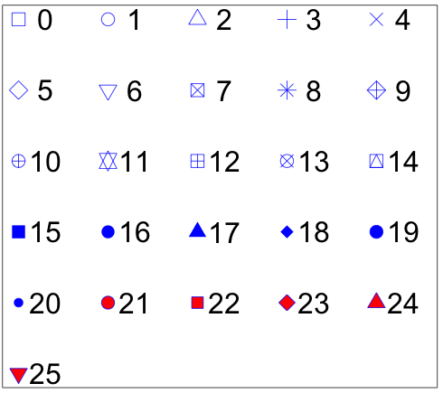
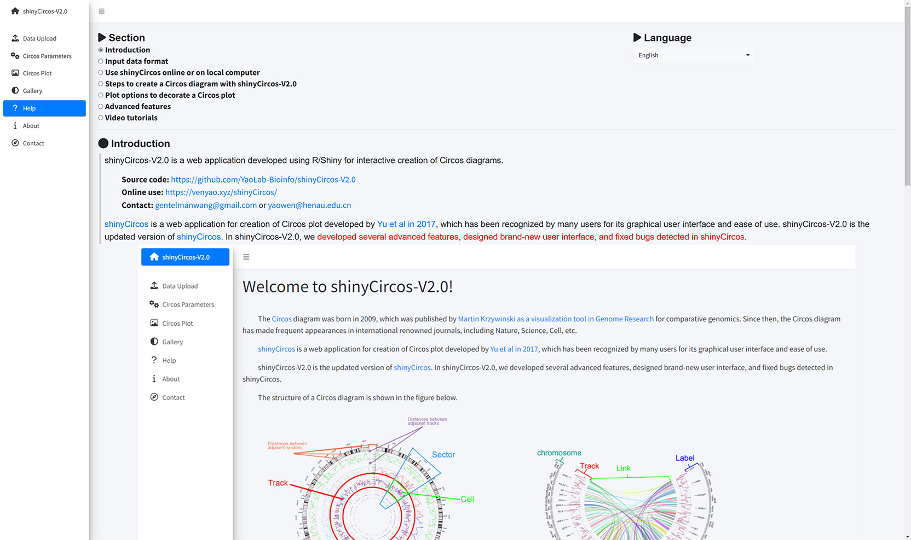
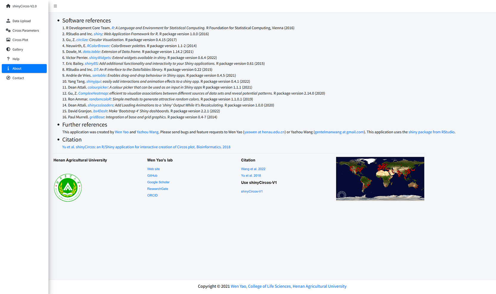
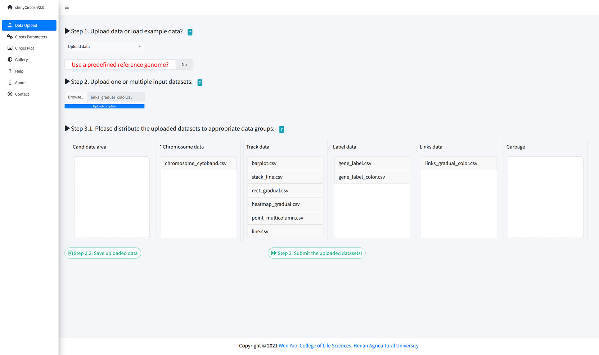
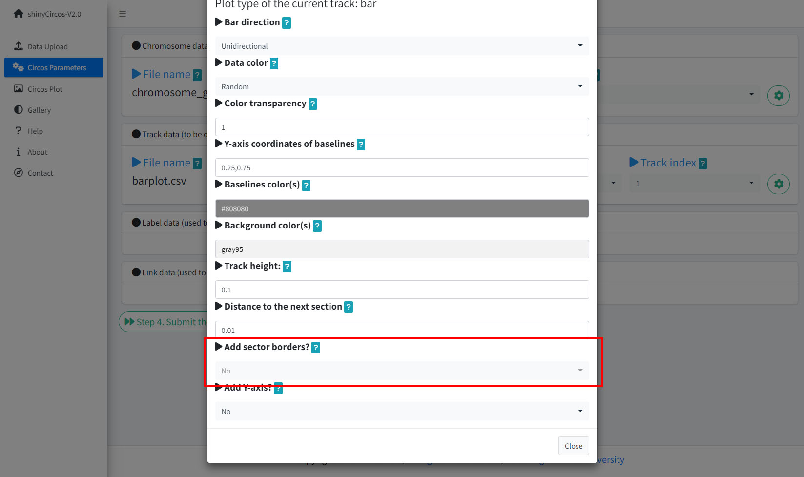

1 Introduction
shinyCircos-V2.0 is an R/shiny application for interactive creation of Circos diagrams.
Source code: https://github.com/YaoLab-Bioinfo/shinyCircos-V2.0
Online use: https://venyao.xyz/shinyCircos2.0/
Contact: gentelmanwang@gmail.com or yaowen@henau.edu.cn
shinyCircos is a web application for creation of Circos plot developed by Yu et al in 2017, which has been recognized by many users for its graphical user interface and ease of use. shinyCircos-V2.0 is the updated version of shinyCircos. In shinyCircos-V2.0, we developed several advanced features, designed brand-new user interface, and fixed bugs detected in shinyCircos.

Before using shinyCircos-V2.0, we need to understand the structure of a typical Circos plot. Please check the names of each component of a typical Circos plot, which will help you go through this manual.

The basic structure of a Circos diagram.

Different tracks of a Circos diagram.
2 Input data format
To use shinyCircos-V2.0, input datasets must be prepared in correct format.
We recommend uploading the input file in ".csv" format, as ".csv" files are explicit and commonly used in data storage and analysis. Please note that proper names and orders of columns are critical for the input data.
2.1 Chromosome data (used to define the chromosomes of a Circos plot)
A chromosome data is indispensable for shinyCircos-V2.0, as it defines the chromosomes of a Circos plot. Two types of Chromosome data are accepted by shinyCircos-V2.0, the General chromosome data, and the Cytoband data.
2.1.1 General data with three columns
Chromosomes data can be a general chromosome data with three columns: the chromosome ID, the start and end coordinates of different genomic regions.
| chr | start | end |
|---|---|---|
| chr1 | 1 | 249250621 |
| chr2 | 1 | 243199373 |
| chr3 | 1 | 198022430 |
| chr4 | 1 | 191154276 |
| chr5 | 1 | 180915260 |
| chr6 | 1 | 171115067 |
| chr7 | 1 | 159138663 |
| chr8 | 1 | 146364022 |
A general chromosome data.

The default color of the chromosome bands of a Circos plot created with a general chromosome data is gray.

A Circos plot created with a General chromosome data.
2.1.2 Cytoband data with five columns
Cytoband data contains five columns: the chromosome ID, the start and end coordinates of different genomic regions, the name of cytogenetic band, and Giemsa stain results.
| chr | start | end | value1 | value2 |
|---|---|---|---|---|
| chr1 | 1 | 2300000 | p36.33 | geng |
| chr1 | 2300000 | 5400000 | p36.32 | gpos25 |
| chr2 | 1 | 4400000 | p25.3 | geng |
| chr2 | 4400000 | 7100000 | p25.2 | gpos50 |
| chr3 | 1 | 2800000 | p26.3 | gpos50 |
| chr3 | 2800000 | 4000000 | p26.2 | geng |
| chr4 | 1 | 4500000 | p16.3 | gneg |
| chr4 | 4500000 | 6000000 | p16.2 | gpos25 |
A cytoband chromosome data.
A Circos plot with Ideogram chromosome will be created when cytoband data is used.

A Circos plot created with a cytoband chromosome data.
2.2 Track data (to be displayed in different tracks of a Circos plot)
One or multiple input datasets can be uploaded and displayed in different Tracks of a Circos diagram. Different types of plot can be created using the input datasets. The first three columns of the input data for any type of plot are fixed, namely the chromosome, the strat and end coordinates of genomic regions.
2.2.1 Tarck data to plot bars
The input data to make bar plot in a Circos diagram should contain at least four columns, the chromosome, the strat and end coordinates of genomic regions, and a fourth column with data values. Please note that the fourth column must be positive or negative numeric real numers. Two types of bar plots can be created, the unidirectional and bidirectional bar plots.
For unidirectional bar plot, the minimum value of the fourth column will be used as the starting point of all bars, as shown in the following figure.
| chr | start | end | value |
|---|---|---|---|
| chr1 | 10382554 | 26901963 | 0.374 |
| chr1 | 26901963 | 30511288 | 0.084 |
| chr2 | 2129395 | 9774923 | 0.237 |
| chr2 | 14718126 | 15320740 | 0.529 |
| chr3 | 472933 | 7160480 | 0.477 |
| chr3 | 10972902 | 11789212 | 0.636 |
| chr4 | 8617827 | 16885659 | -0.831 |
| chr4 | 18135416 | 25567929 | 0.239 |
Input data to make unidirectional bars.

A circos plot with unidirectional bars.
For bidirectional bars, the 4th column which contains the data values will be divided into two groups based on the boundary value. The default boundary value is set as zero, which can be modified by the user.
| chr | start | end | value |
|---|---|---|---|
| chr1 | 5622039 | 9110831 | 0.095 |
| chr1 | 5622039 | 9110831 | -0.405 |
| chr2 | 13669568 | 16275459 | 0.936 |
| chr2 | 13669568 | 16275459 | -0.436 |
| chr3 | 4777699 | 8367346 | 0.174 |
| chr3 | 4777699 | 8367346 | -0.326 |
| chr4 | 4969470 | 11023301 | 0.664 |
| chr4 | 4969470 | 11023301 | -0.164 |
Input data to make bidirectional bars.

A circos plot with bidirectional bars.
An additional color column can be added in the input data to make colored bars in shinyCircos-V2.0. To customize color for data with multiple columns, users should provide a character string representing one or multiple colors separated by commas. For example, 'red' or 'red,orange,blue'. To customize color for data with multiple groups, the column indicating different groups should be named as 'color'. Users should provide a character strings assigning colors to each group. For example, 'a:red;b:green;c:blue', in which 'a b c' represent different data groups. Color for data groups without assigned color would be set as 'grey'.
| chr | start | end | value | color |
|---|---|---|---|---|
| chr1 | 2321390 | 22775301 | -0.525358698 | a |
| chr1 | 43812694 | 44287183 | 0.101162224 | a |
| chr3 | 10094726 | 13041378 | -0.117686062 | a |
| chr3 | 17700130 | 17853399 | 0.229028492 | a |
| chr4 | 58783476 | 66246991 | -0.866641798 | a |
| chr4 | 77375595 | 79033629 | -0.313168927 | b |
| chr9 | 5488989 | 10117165 | -0.309662277 | c |
| chr9 | 14069596 | 45956401 | 0.111702254 | c |
Input data to make colored bars.

A circos plot with colored bars.
2.2.2 Tarck data to plot lines
The input data to make line chart should contain at least four columns. The 1st column defines the chromosome of multiple genomic regions. The 2nd and 3rd columns define the strat and end coordinates of these genomic regions. The fourth column is the data values of all genomic regions. Please note that the fourth column must be positive or negative numeric real numers.
| chr | start | end | value1 |
|---|---|---|---|
| chr1 | 788538 | 5571920 | 0.309 |
| chr1 | 6704086 | 10962288 | -0.075 |
| chr2 | 5331353 | 17190915 | 0.129 |
| chr2 | 27214061 | 37578483 | -0.796 |
| chr3 | 1424915 | 5127305 | -0.413 |
| chr3 | 10792280 | 11980906 | -0.096 |
| chr4 | 61966 | 10528434 | -1.224 |
| chr4 | 14526642 | 19266615 | 0.231 |
An example dataset to plot lines.

A Circos diagram with a single track of line plot.
An additional 'color' column can be added in the input dataset to assign colors to lines of different groups on the same track.
| chr | start | end | value | color |
|---|---|---|---|---|
| chr1 | 2306857 | 8605927 | -0.207 | a |
| chr1 | 20851761 | 21889246 | 0.121 | a |
| chr4 | 97627526 | 102877458 | 0.259 | a |
| chr4 | 106904642 | 109386825 | -0.65 | b |
| chr14 | 84253948 | 92430157 | 0.396 | c |
| chr14 | 97757077 | 100917700 | -0.366 | c |
| chr15 | 2898612 | 7858243 | 0.917 | d |
| chr15 | 14718550 | 26144439 | -0.526 | d |
An input dataset with a color column to create line plot.

A single track of line chart with different colors for different data groups.
Multiple lines can be drawn on the same track by adding multiple columns of data values in the input dataset.
| chr | start | end | value1 | value2 |
|---|---|---|---|---|
| chr1 | 294540 | 4666160 | -0.66 | -0.596 |
| chr1 | 17589118 | 18065224 | -0.138 | -0.747 |
| chr2 | 6872874 | 16224260 | -0.77 | -0.403 |
| chr2 | 24936258 | 28070400 | 0.716 | 0.22 |
| chr3 | 503979 | 24719267 | 0.217 | -0.459 |
| chr3 | 24979219 | 43289811 | 0.226 | -0.185 |
| chr4 | 859776 | 2929166 | 0.738 | 0.602 |
| chr4 | 5923032 | 9091660 | -0.2 | -0.384 |
Example input dataset with multiple columns of data values.

A single track of line chart with multiple lines.
2.2.3 Tarck data to plot points
The format of input dataset to plot points is similar to the input data to make line charts.
The input data to plot points should contain at least four columns. The 1st column defines the chromosome of multiple genomic regions. The 2nd and 3rd columns define the strat and end coordinates of these genomic regions. The fourth column is the data values of all genomic regions. Please note that the fourth column must be positive or negative numeric real numers.
| chr | start | end | value1 |
|---|---|---|---|
| chr1 | 1769292 | 1796134 | 0.339 |
| chr1 | 4881594 | 5495466 | 1.005 |
| chr2 | 5800619 | 8815540 | 0.088 |
| chr2 | 10440452 | 10893876 | -0.891 |
| chr3 | 41265 | 7536287 | -0.1 |
| chr3 | 9209200 | 12874260 | -0.032 |
| chr4 | 3571886 | 7801048 | -0.436 |
| chr4 | 24973615 | 30857176 | -0.106 |
An example dataset to plot points.

A Circos diagram with a single track of points plot.
An additional 'cex' column can be added in the input data to control the size of the points. The 'cex' column should be positive numeric numbers.
| chr | start | end | value | cex |
|---|---|---|---|---|
| chr1 | 1326341 | 1845331 | -0.374 | 0.5 |
| chr1 | 9901462 | 15656953 | -0.321 | 0.3 |
| chr2 | 17619104 | 25624262 | -0.194 | 0.6 |
| chr2 | 26946941 | 27889388 | 0.27 | 0.6 |
| chr3 | 1720430 | 4389146 | -0.319 | 0.6 |
| chr3 | 6104592 | 7216808 | 0.315 | 0.6 |
| chr4 | 8327054 | 16538974 | 0.448 | 0.5 |
| chr4 | 29870261 | 39830090 | -0.005 | 1 |
Input data to plot points with a 'cex' column.

A single track of point chart with varying point sizes.
Similarly, an additional 'color' column can be added in the input data to assign colors to points of different groups on the same track.
| chr | start | end | value | color |
|---|---|---|---|---|
| chr1 | 6098636 | 13915642 | 0.372 | a |
| chr1 | 42002814 | 45209039 | -0.253 | a |
| chr4 | 92963013 | 96656317 | -0.148 | a |
| chr4 | 107125173 | 107125346 | 0.75 | b |
| chr9 | 8290596 | 22658143 | -0.598 | c |
| chr9 | 24382136 | 34055254 | 0.279 | c |
| chrY | 30359053 | 32853733 | -0.286 | d |
| chrY | 34769699 | 39644200 | 0.343 | d |
Input data to plot points with a 'color' column.

A single track of point chart with varying point colors.
Moreover, an additional 'pch' column can be added in the input data to control the shapes of points for different groups on the same track.

Different point shapes defined by the pch parameter in R.
(Image Source:http://coleoguy.blogspot.com/2016/06/symbols-and-colors-in-r-pch-argument.html)
| chr | start | end | value | pch |
|---|---|---|---|---|
| chr1 | 8605110 | 17214753 | 0.208 | 1 |
| chr1 | 22124150 | 36435838 | 0.905 | 1 |
| chr3 | 121395059 | 124720880 | 0.269 | 1 |
| chr3 | 126119336 | 134480084 | 0.947 | 8 |
| chr7 | 46299973 | 47301871 | 0.019 | 13 |
| chr7 | 59003737 | 65956990 | -0.403 | 13 |
| chr11 | 128515663 | 132431158 | 0.146 | 16 |
| chr12 | 7434839 | 18272884 | 0.766 | 16 |
Input data to plot points with a 'pch' column.

A single track of point chart with varying point shapes.
The 'cex', 'color' and 'pch' columns can appear in a single input dataset, at the same time.
| chr | start | end | value | pch | cex |
|---|---|---|---|---|---|
| chr1 | 4049230 | 11358879 | -0.59 | 10 | 0.4 |
| chr1 | 18671867 | 29619034 | 0.442 | 10 | 0.7 |
| chr4 | 72761399 | 91691619 | 0.134 | 17 | 0.4 |
| chr4 | 101737149 | 102799485 | -0.025 | 17 | 0.9 |
| chr7 | 4065399 | 7750398 | -0.327 | 17 | 0.6 |
| chr7 | 9065662 | 15775923 | 0.174 | 17 | 0.2 |
| chr9 | 32282995 | 33499747 | 0.476 | 18 | 0.7 |
| chr9 | 54414502 | 54804733 | 0.396 | 18 | 0.4 |
Input data to plot points with a 'pch' column and a 'cex' column.

A single track of point chart with varying point shapes and point sizes.
| chr | start | end | value | color | cex |
|---|---|---|---|---|---|
| chr1 | 8900700 | 9211013 | -0.6 | a | 0.3 |
| chr1 | 38733680 | 54945292 | 0.233 | a | 1.1 |
| chr5 | 25650709 | 32392960 | 0.409 | b | 0.3 |
| chr5 | 33011156 | 54462250 | -0.245 | b | 1.1 |
| chr7 | 86777790 | 89385025 | 0.006 | b | 0.9 |
| chr7 | 103848396 | 107618696 | -1.093 | b | 1 |
| chrY | 48564458 | 48770305 | 0.208 | d | 0.3 |
| chrY | 50570091 | 52373385 | 0.231 | d | 0.4 |
Input data to plot points with a 'color' column and a 'cex' column.

A single track of point chart with varying point colors and point sizes.
| chr | start | end | value | color | pch |
|---|---|---|---|---|---|
| chr1 | 3768320 | 4851773 | -0.416 | a | 15 |
| chr1 | 5712552 | 10112216 | -0.41 | a | 15 |
| chr10 | 5831619 | 10981299 | 0.299 | b | 15 |
| chr10 | 13728053 | 15927681 | 0.025 | b | 15 |
| chr22 | 22254151 | 36401489 | 0.182 | c | 17 |
| chr22 | 40556634 | 47770670 | -0.011 | c | 17 |
| chrY | 30674719 | 39836594 | 0.101 | c | 17 |
| chrY | 52737371 | 53903116 | -0.003 | c | 17 |
Input data to plot points with a 'color' column and a 'pch' column.

A single track of point chart with varying point colors and point shapes.
| chr | start | end | value | color | pch | cex |
|---|---|---|---|---|---|---|
| chr1 | 14053524 | 24878326 | -0.498 | a | 1 | 0.9 |
| chr1 | 29640089 | 49313488 | -0.565 | a | 1 | 1 |
| chr4 | 8408012 | 12767180 | -0.108 | b | 4 | 0.4 |
| chr4 | 22963697 | 41682972 | -0.45 | b | 4 | 0.9 |
| chr9 | 51441395 | 53095312 | 0.527 | c | 6 | 1.1 |
| chr9 | 65510881 | 69698456 | 0.127 | c | 6 | 1.1 |
| chrX | 143579620 | 144650695 | -0.388 | e | 20 | 0.7 |
| chrX | 147326182 | 151556373 | -0.386 | e | 20 | 0.7 |
Input data to plot points with a 'color' column, a 'pch' column and a 'cex' column.

A single track of point chart with varying point colors, varying point shapes, and varying point sizes.
Similarly, we can also plot multiple groups of point charts by adding multiple columns of data values in the input data.
| chr | start | end | value1 | value2 |
|---|---|---|---|---|
| chr1 | 7224218 | 16393864 | -0.196 | -0.955 |
| chr1 | 21093451 | 25392112 | 0.128 | 0.275 |
| chr3 | 14909280 | 22502495 | 0.421 | -0.185 |
| chr3 | 24704666 | 26117987 | -0.102 | 0.637 |
| chr4 | 35556750 | 37025119 | 0.063 | 0.848 |
| chr4 | 39947625 | 63436481 | 0.28 | -0.262 |
| chrX | 110739650 | 115294899 | 0.388 | 1.074 |
| chrX | 118586060 | 119613523 | 0.151 | 0.784 |
Example input dataset with multiple columns of data values.

A single track of point chart with multiple groups of points.
2.2.4 Tarck data to create ideogram
An ideogram is a graphical representation of chromosomes. In shinyCircos-V2.0, we can draw ideogram on any Track. The format of input data to create ideogram is the same as that of the Cytoband data with five columns.
| chr | start | end | value1 | value2 |
|---|---|---|---|---|
| chr1 | 1 | 2300000 | p36.33 | gneg |
| chr1 | 2300000 | 5400000 | p36.32 | gpos25 |
| chr2 | 1 | 4400000 | p25.3 | gneg |
| chr2 | 4400000 | 7100000 | p25.2 | gpos50 |
| chr3 | 1 | 2800000 | p26.3 | gpos50 |
| chr3 | 2800000 | 4000000 | p26.2 | gneg |
| chr4 | 1 | 4500000 | p16.3 | gneg |
| chr4 | 4500000 | 6000000 | p16.2 | gpos25 |
An example dataset to create ideogram.

A Circos diagram with a single track of ideogram.
2.2.5 Tarck data to plot discrete rectangles
The input data to plot discrete rectangles should contain four columns. The 1st column defines the chromosome of multiple genomic regions. The 2nd and 3rd columns define the strat and end coordinates of these genomic regions. The fourth column must be a chracter vector.
| chr | start | end | group |
|---|---|---|---|
| chr1 | 1465 | 5857186 | b |
| chr1 | 6005405 | 7051583 | c |
| chr3 | 13 | 3831804 | d |
| chr3 | 3989861 | 11612588 | g |
| chr5 | 56 | 2698252 | h |
| chr5 | 2719598 | 9370038 | c |
| chr7 | 146 | 4643362 | e |
| chr7 | 4723845 | 16418898 | e |
An example dataset to create discrete rectangles.

A Circos diagram with a single track of discrete rectangles.
2.2.6 Tarck data to plot gradual rectangles
The input data to plot gradual rectangles should contain four columns. The 1st column defines the chromosome of multiple genomic regions. The 2nd and 3rd columns define the strat and end coordinates of these genomic regions. The fourth column is the data values of all genomic regions. Please note that the fourth column must be real numbers.
| chr | start | end | value |
|---|---|---|---|
| chr1 | 1 | 6657591 | 0.034 |
| chr1 | 9792529 | 20706145 | -0.527 |
| chr3 | 651 | 27839332 | -0.532 |
| chr3 | 28591880 | 29683518 | -0.156 |
| chr5 | 407 | 16490429 | 0.281 |
| chr5 | 17056645 | 32303717 | 0.485 |
| chr7 | 3226 | 7227722 | -0.482 |
| chr7 | 7387758 | 13632289 | 0.496 |
An example dataset to create gradual rectangles.

A Circos diagram with a single track of gradual rectangles.
2.2.7 Tarck data to plot discrete heatmaps
The input data to plot discrete heatmaps should contain 4 columns. The 1st column defines the chromosome of multiple genomic regions. The 2nd and 3rd columns define the strat and end coordinates of these genomic regions. Each of the rest columns should be a chracter vector.
| chr | start | end | group1 | group2 | group3 | group4 | group5 | group6 | group7 | group8 | group9 | group10 |
|---|---|---|---|---|---|---|---|---|---|---|---|---|
| chr1 | 20621957 | 21209624 | d | a | a | e | e | c | d | g | g | d |
| chr1 | 42967726 | 53028972 | f | b | h | b | g | c | b | h | h | d |
| chr3 | 17138030 | 40796035 | f | h | c | f | a | a | g | h | h | h |
| chr3 | 57219142 | 60650338 | g | b | g | f | b | g | f | f | b | e |
| chr5 | 8910650 | 10080670 | f | c | e | c | b | e | h | b | a | g |
| chr5 | 13535538 | 32715550 | h | h | h | e | d | c | e | b | h | c |
| chr7 | 9333245 | 11185543 | e | e | g | d | c | f | h | f | f | d |
| chr7 | 12717294 | 27297461 | g | a | b | d | a | d | a | g | f | g |
An example dataset to create discrete heatmaps.

A Circos diagram with a single track of discrete heatmap.
2.2.8 Tarck data to plot gradual heatmaps
The input data to plot gradual heatmaps should contain 4 columns. The 1st column defines the chromosome of multiple genomic regions. The 2nd and 3rd columns define the strat and end coordinates of these genomic regions. Each of the rest columns should be a numeric vector.
| chr | start | end | value1 | value2 | value3 | value4 | value5 | value6 | value7 | value8 | value9 | value10 |
|---|---|---|---|---|---|---|---|---|---|---|---|---|
| chr1 | 20621957 | 21209624 | -0.672 | -0.271 | -0.001 | 0.486 | -0.986 | -0.37 | 0.48 | 0.38 | 0.158 | 0.108 |
| chr1 | 42967726 | 53028972 | -0.147 | 0.387 | 1.332 | 0.182 | 0.16 | -0.132 | 0.234 | -0.089 | -0.918 | 0.397 |
| chr3 | 17138030 | 40796035 | 0.046 | 0.028 | -0.691 | -0.341 | 1.011 | -0.242 | -0.027 | -0.273 | 0.276 | -1.028 |
| chr3 | 57219142 | 60650338 | -0.514 | 0.429 | 0.29 | -0.356 | -0.025 | 0.537 | -0.368 | 0.486 | 0.392 | -0.085 |
| chr5 | 8910650 | 10080670 | 0.175 | -0.855 | 0.934 | -0.914 | 0.879 | -0.181 | -0.512 | -0.074 | 0.302 | 0.04 |
| chr5 | 13535538 | 32715550 | 0.088 | 0.005 | 1.005 | -0.076 | -0.007 | 0.371 | 0.494 | -0.236 | 0.219 | -0.422 |
| chr7 | 9333245 | 11185543 | 0.442 | 0.38 | -1.139 | -0.352 | -0.338 | -0.021 | -0.118 | -0.11 | 0.379 | -0.38 |
| chr7 | 12717294 | 27297461 | -0.404 | 0.264 | 0.131 | 0.24 | -0.565 | 0.092 | 0.21 | -0.739 | 0.855 | 0.785 |
An example dataset to create gradual heatmaps.

A Circos diagram with a single track of gradual heatmap.
2.2.9 Tarck data to plot stack-point
Using shinyCircos-V2.0, we can also create stack point chart. The input data should contain four columns. The 1st column defines the chromosome of multiple genomic regions. The 2nd and 3rd columns define the strat and end coordinates of these genomic regions. The fourth stack column represents the group of different data values. And data values of the same group will be plotted on the same line.
| chr | start | end | stack |
|---|---|---|---|
| chr1 | 11589909 | 40133642 | a |
| chr1 | 52614734 | 59580026 | a |
| chr5 | 28358375 | 28943627 | a |
| chr5 | 48623024 | 64086871 | a |
| chr1 | 37080716 | 41662004 | b |
| chr1 | 87453098 | 89776607 | b |
| chr5 | 6608219 | 8525932 | b |
| chr5 | 39324082 | 40131031 | b |
An example dataset to create stack points.

A Circos diagram with a single track of stack points.
2.2.10 Tarck data to plot stack-line
Similarly, we can also create stack line chart using shinyCircos-V2.0. The input data format is the same as the input data of stack-point.
| chr | start | end | stack |
|---|---|---|---|
| chr1 | 20646359 | 46383846 | a |
| chr5 | 2723623 | 5392944 | a |
| chr9 | 4943376 | 8560799 | a |
| chr13 | 33868717 | 71744746 | a |
| chr1 | 16051196 | 33970939 | b |
| chr5 | 89644 | 46679748 | b |
| chr9 | 29528190 | 72792793 | b |
| chr13 | 22993703 | 23901290 | b |
An example dataset to create stack lines.

A Circos diagram with a single track of stack lines.
2.3 Label data (used to label elements in a track)
Label data is used to annotate the elements in a specified track with text labels. The input data should contain four or five columns, as shown in the figure below.
The four-column label data is used to draw general labels, and their colors are uniform.
| chr | start | end | label |
|---|---|---|---|
| chr1 | 3698046 | 3736201 | TP73 |
| chr1 | 156114670 | 156140089 | LMNA |
| chr5 | 42423775 | 42721878 | GHR |
| chr5 | 150113839 | 150155859 | PDGFRB |
| chr9 | 116153792 | 116402321 | PAPPA |
| chr9 | 21967752 | 21975133 | CDKN2A |
| chr11 | 34438925 | 34472060 | CAT |
| chr11 | 108222832 | 108369099 | ATM |
An example label data.

An example Circos diagrams with text labels.
The five-column label data is used to draw complex labels, and their colors correspond one-to-one with the color values of the color columns.
| chr | start | end | label | color |
|---|---|---|---|---|
| chr1 | 3698046 | 3736201 | TP73 | red |
| chr1 | 156114670 | 156140089 | LMNA | #FF000080 |
| chr5 | 42423775 | 42721878 | GHR | blue |
| chr5 | 150113839 | 150155859 | PDGFRB | blue |
| chr9 | 116153792 | 116402321 | PAPPA | blue |
| chr9 | 21967752 | 21975133 | CDKN2A | green |
| chr13 | 48303747 | 48481890 | RB1 | green |
| chr14 | 75278778 | 75282234 | FOS | green |
An example label data with a color column.

An example Circos diagrams with labels of different colors.
2.4 Links data
The links data should contain at least six columns. The first three columns define the chromosome, the start and end coordinates of multiple genomic regions. The 4-6th columns of the input dataset define the chromosome, the start and end coordinates of another set of genomic regions. Links will be created between all pairs of genomic regions in the same line of the input dataset.
| chr1 | start1 | end1 | chr2 | start2 | end2 |
|---|---|---|---|---|---|
| chr20 | 37720821 | 47419255 | chr5 | 162124929 | 168434522 |
| chr8 | 76179361 | 83302661 | chr1 | 162049212 | 213797379 |
| chr2 | 38375277 | 49805216 | chr11 | 19060895 | 36294068 |
| chr2 | 120255288 | 134792772 | chr13 | 62362083 | 71502856 |
| chr4 | 95199225 | 102508113 | chr13 | 16327889 | 24910342 |
| chr15 | 83769167 | 83992136 | chr10 | 83790329 | 119443216 |
| chr19 | 4720005 | 9699881 | chr5 | 128543229 | 133838939 |
| chr7 | 69144425 | 82831719 | chr14 | 31274513 | 45025723 |
An example links dataset.

An example Circos diagrams with links.
An additional color column can be added in the input dataset to control the color of the links. The color column can be a character vector or a numeric vector.
| chr1 | start1 | end1 | chr2 | start2 | end2 | color |
|---|---|---|---|---|---|---|
| chr20 | 37720821 | 47419255 | chr5 | 162124929 | 168434522 | c |
| chr8 | 76179361 | 83302661 | chr1 | 162049212 | 213797379 | c |
| chr2 | 38375277 | 49805216 | chr11 | 19060895 | 36294068 | b |
| chr2 | 120255288 | 134792772 | chr13 | 62362083 | 71502856 | a |
| chr4 | 95199225 | 102508113 | chr13 | 16327889 | 24910342 | a |
| chr15 | 83769167 | 83992136 | chr10 | 83790329 | 119443216 | b |
| chr19 | 4720005 | 9699881 | chr5 | 128543229 | 133838939 | b |
| chr7 | 69144425 | 82831719 | chr14 | 31274513 | 45025723 | c |
An example links dataset with a color column of characters.

An example Circos diagrams with links colored by different groups.
| chr1 | start1 | end1 | chr2 | start2 | end2 | color |
|---|---|---|---|---|---|---|
| chr20 | 37720821 | 47419255 | chr5 | 162124929 | 168434522 | 217 |
| chr8 | 76179361 | 83302661 | chr1 | 162049212 | 213797379 | 7 |
| chr2 | 38375277 | 49805216 | chr11 | 19060895 | 36294068 | 206 |
| chr2 | 120255288 | 134792772 | chr13 | 62362083 | 71502856 | 27 |
| chr4 | 95199225 | 102508113 | chr13 | 16327889 | 24910342 | 189 |
| chr15 | 83769167 | 83992136 | chr10 | 83790329 | 119443216 | 161 |
| chr19 | 4720005 | 9699881 | chr5 | 128543229 | 133838939 | 89 |
| chr7 | 69144425 | 82831719 | chr14 | 31274513 | 45025723 | 13 |
An example links dataset with a color column of numeric numbers.

An example Circos diagrams with links of gradual colors.
3 Use shinyCircos online or on local computer
3.1 Use shinyCircos-V2.0 online
The URL to use shinyCircos-V2.0 online is https://venyao.xyz/shinyCircos2.0/.
3.2 Interface of shinyCircos-V2.0
The shinyCircos-V2.0 application contains 8 main menus: "shinyCircos-V2.0", "Data Upload", "Circos Parameters", "Circos Plot", "Gallery", "Help", "About" and "Contact". The "shinyCircos-V2.0" menu gives a brief introduction to the shinyCircos-V2.0 application.
The home page of shinyCircos-V2.0.
The "Data Upload" menu allows the user to upload their own input data from the local disk or load example datasets from shinyCircos.

Upload data or load example data?
You can upload multiple datasets at the same time or upload them separately. Remember to save the uploaded data timely. When all input datasets were properly uploaded, please drag the uploaded datasets from the 'Candidate area' to the box of 'Chromosome data' or 'Track data' or 'Label data' or 'Links data', and then Click the 'Save uploaded data' button.
Upload input data from local disk.
The users can also choose to load example datasets from shinyCircos. A total of 10 different example datasets were stored in shinyCircos.

Load example data from shinyCircos.
The "Circos Parameters" provided functionalities for users to view the contents of all uploaded datasets, and the functionalities for users to set parameters for each input dataset. The input datasets are categorized into four groups, including Chromosome data, Track data, Label data and Links data. The filename of each input dataset is diaplayed in a single row of this page. And the content of each dataset can be viewed by clicking the eye icon beside the corresponding file name. For each input dataset, the user is required to set the plot type and other plotting parameters. A small gear at the end of each row is designed for users to set the plotting parameters.

The Circos Parameters page of shinyCircos-V2.0.
Once all the input datasets and the parameters were submitted to the shinyCircos server, a Circos plot will be created and displayed in the 'Circos plot' page of shinyCircos-V2.0. The created Circos plot can be downloaded in PDF or SVG format. Several advanced options to tune the appearance of the created Circos plot are implemented under the 'Advanced options' button.

The Circos Plot page of shinyCircos-V2.0.
Thirty example Circos plots created with shinyCircos-V2.0 are listed in the "Gallery" menu of the shinyCircos-V2.0. The input datasets used to create each example plot are also provided for downloading.

The Gallery page of shinyCircos-V2.0.
Help documents on the usage of shinyCircos-V2.0 are provided in the Help page.

The Help page of shinyCircos-V2.0.
The dependent R packages used by shinyCircos-V2.0 and other information are given in the "About" menu of shinyCircos-V2.0.

The About page of shinyCircos-V2.0.
Contact information is given in the "Contact" page of shinyCircos-V2.0.

The Contact page of shinyCircos-V2.0.
3.3 Install and use shinyCircos-V2.0 on local computers
Users can choose to install and run shinyCircos-V2.0 on a personal computer (Windows, Mac or Linux) without uploading data to an online server. shinyCircos-V2.0 is a cross-platform application, i.e. shinyCircos-V2.0 can be installed on any platform with an available R environment. The installation of shinyCircos-V2.0 consists of three steps.
Step 1. Install R and RStudio
Please check CRAN (https://cran.r-project.org/) for the installation of R. Please check https://www.rstudio.com/ for the installation of RStudio.
Step 2. Install the R/Shiny package and other R packages required by shinyCircos-V2.0
Start an R session with RStudio and run the following lines:
# try an http CRAN mirror if https CRAN mirror doesn't work
install.packages("shiny")
install.packages("circlize")
install.packages("bs4Dash")
install.packages("DT")
install.packages("RColorBrewer")
install.packages("shinyWidgets")
install.packages("data.table")
install.packages("shinyBS")
install.packages("sortable")
install.packages("shinyjqui")
install.packages("shinycssloaders")
install.packages("colourpicker")
install.packages("gridBase")
install.packages("BiocManager")
BiocManager::install("ComplexHeatmap")
Step 3. Run the shinyCircos-V2.0 application
Start an R session with RStudio and run the following lines:
shiny::runGitHub("shinyCircos-V2.0", "YaoLab-Bioinfo")
This command will download the source code of shinyCircos-V2.0 from GitHub to a temporary directory on your computer, then launch the shinyCircos-V2.0 application in a web browser. The downloaded shinyCircos-V2.0 code will be deleted from your computer once the web browser is closed. The next time you run this command in RStudio, it will download the source code of shinyCircos-V2.0 from GitHub again to a temporary directory. This process is cumbersome because it takes some time to download the shinyCircos-V2.0 code from GitHub.
We recommended that users download the source code of shinyCircos-V2.0 from GitHub to a fixed directory on your computer, such as "E:\apps" on Windows. A zip file named "shinyCircos-V2.0-master.zip" will be downloaded to your computer. Move this file to "E:\apps" and unzip this file. Then a directory named "shinyCircos-V2.0-master" will be generated in "E:\apps". The scripts "server.R" and "ui.R" can be found in "E:\apps\shinyCircos-V2.0-master". You can then start the shinyCircos-V2.0 application by running the following lines in RStudio.

Download the source code of shinyCircos-V2.0 from GitHub.
library(shiny)
runApp("E:/apps/shinyCircos-V2.0-master", launch.browser = TRUE)
The shinyCircos-V2.0 application will then be opened in your computer's default browser.
4 Steps to create a Circos diagram with shinyCircos-V2.0
To make a Circos plot using shinyCircos-V2.0, the user must prepare and upload a file that defines the chromosomes of a specific genome, as well as other input data to be displayed along the genome. In this section, we will demonstrate all the basic steps to create a Circos diagram using example datasets.
4.1 Basic steps to create a Circos diagram with shinyCircos-V2.0
Step 1. Upload a single "Chromosome data" to define the chromosomes of a Circos plot
A chromosome data is indispensable for shinyCircos-V2.0, as it defines the chromosomes of a Circos plot. The detailed format of a Chromosome data is described in the "Input Data Format" section.
A file named as 'chromosome_general.csv' was uploaded from the local disk to to shinyCircos-V2.0 using the data upload widget implemented in the "Data Upload" menu of the shinyCircos-V2.0 application, as shown in the figure below.

Upload a chromosome data.
Step 2. Upload one or multiple input datasets to be displayed in different Tracks
Except for a Chromosome data, one or multiple other input datasets can be uploaded to shinyCircos-V2.0, to be displayed in different trakcs of a Circos plot. The detailed format of input files to make different types of plot is detailed in the "Input Data Format" section. Here, two files named as "barplot.csv" and "line.csv" were uploaded from local disk to shinyCircos-V2.0. Both datasets were distributed into the 'Track data' box. Remember to save the uploaded data timely.
Step 3. Set the "Track" index and plot type for each input dataset
By default, the track index for the input datasets were determined by the order of uploading. And the default plot type for all input datasets were set as point. Here, the plot type for "barplot.csv" was set as 'bar', and the plot type for "line.csv" was set as 'line'.

Set Track index and plot type in the Circos Parameters page of shinyCircos-V2.0.
Step 4. Click the "Submit!" button to create the Circos plot
When the track indedx and plot type were correctly setted for all the input datasets, please click the "Step 4. Submit the plot parameters to make the Circos plot!" button at the bottom of the "Circos Parameters" page to make the desired Circos plot. By default, random colors or predefined colors will be used by shinyCircos-V2.0 if necessary.
4.2 Update a Circos plot by replacing one or more input datasets
A track of a Circos plot is usually defined by a single input dataset. And a typical Circos plot usually contains multiple tracks defined by multiple input datasets. From time to time, we may want to replace one or more of these input files so that we can update some tracks of a Circos plot without recreating the entire plot. For example, we want to create a Circos plot with discrete rectangles by replacing Track2's "line.csv" with a new input file "rect_discrete.csv". To achieve this, we can go to the "Data Upload" page and upload "rect_discrete.csv" to shinyCircos-V2.0, distribute the "rect_discrete.csv" file into the "Track data" box, and move the "line.csv" file to the "Garbage" box. After that, we should click the "Step 2.2. Save uploaded data" button. At the same time, we need to change the plot type of the newly uploaded dataset from 'line' to "rect_discrete". Finally, we need to click the "Step 4. Submit the plot parameters to make the Circos plot!" button at the bottom of the "Circos Parameters" panel to update the Circos plot.
4.3 Download the created Circos plot in PDF or SVG format
The created Circos plot can be downloaded as a PDF or a SVG file using the widgets "Download PDF-file" and "Download SVG-file" on the top of the "Circos Plot" page. By default, the two files are named as "shinyCircos.pdf" and "shinyCircos.svg", respectively. The downloaded PDF file can be opened in Adobe Acrobat, while the downloaded SVG file "shinyCircos.svg" can be opened in Google Chrome browser.

Options to download the created Circos plot.
4.4 Steps to make a complex Circos diagram with shinyCircos-V2.0
Using shinyCircos-V2.0, 10 different types of graphs, including point, line, bar, stack-line, stack-point, rect-gradual, rect-discrete, heatmap-gradual, heatmap-discrete and ideogram, can be created. To create a Circos graph, at least one input data file is required, that is, a Chromosome data file that defines the length of the genome. In this section, we will show the steps to create a complex Circos diagram with shinyCircos-V2.0.
Step 1.

All data uploaded and categorized correctly
Step 2.

Select the correct data type for the corresponding data
Step 3.

In the pop-up menu, choose to draw the vertical axis for the histogram, and then draw it after the setting is complete.
Step 4.

After getting the Circos diagram, make advanced settings for it
Step 5.

Select Add Legend for the Circos diagram and the legend is on the right, then select Add Track Index, then click "Updata" to update the Circos diagram
Step 6.

Get Circos plot with Track index and legend
Step 7.
Continue to set the highlighted area in the "Advanced options" menu, enter the position you want to highlight in the left text box, then select the transparency, click the "SAVE" button to check whether the input data is compliant, and click "Update" after there is no problem "Update Circos Diagram
Step 8.

Finally, get a complex Circos diagram, at which point you can save the Circos diagram as PDF or SVG
5 Plot options to decorate a Circos plot
In the "Circos Parameters" menu, a small gear button is displayed at the rightmost of each input dataset. By clicking this button, a page with multiple widgets will pop up for users to set parameters for the corresponding input data. Setting of several parameters are demonstrated in this section.
5.1 Track height
The default Track height is set as 0.1. The track height can be increased by turning up this number.

Options to increase the track height of a Circos plot.
5.2 Y-axis
shinyCircos-V2.0 now supports adding a Y-axis to a specified track, to display the range of data values for the corresponding track.

Options to add Y-axis for a track in a Circos plot.

A Circos plot with Y-axis.
5.3 Distances between adjacent tracks
This parameter is designed to tune the distance between adjancent tracks, which can also be used to tune the distance between a track and a label data, or the distance between a track and a link data.

Options to adjust the distances between adjacent tracks.

A Circos plot with larger gaps between adjacent tracks.
5.4 Cell border
shinyCircos-V2.0 also supporting adding cell borders to one or multiple "Tracks" to emphasize these Tracks.

Options to add cell borders.

A Circos plot with cell borders.
5.5 Background color of a "Track"
In shinyCircos-V2.0, users can adjust the background color of different Tracks to distinguish different tracks. The color can be null or a color vector of arbitrary length adjusted automatically to the number of sectors. For example, 'grey95' or 'grey95,grey,pink,yellow'. Hex color codes as '#FF0000' are also supported.

Options to change the background color of the current Track.

Tracks with different background colors in a Circos plot.
5.6 Distances between adjacent sectors
This parameter is used to tune the gap size between adjacent sectors. Numeric vector of arbitrary length is accepted and adjusted automatically to the number of sectors. For example, '1' or '1,2,3,1'. The first value corresponds to the gap between the first and the second sector.

Options to adjust the distances between adjacent setcors.

A circos plot with larger gap size between adjacent sectors.
6 Advanced features
Compared with the previous version of shinyCircos, we developed several advanced features in shinyCircos-V2.0.
6.1 Add legend
For any of the plot type including "stack-line", "stack-point", "heatmap-gradual", "heatmap-discrete", "rect-gradual" and "rect-discrete", a figure legend can be added to the created Circos plot using the widget in "Advanced options" of the "Circos Plot" menu. The figure legend can be placed at the bottom or right side of the Circos plot.

Options to add figure legend for a Circos plot.

A Circos diagram with figure legend.
6.2 Highlight specific genomic regions
shinyCircos-V2.0 supports highlighting one or multiple Sectors of a Circos plot. This functionality is implemented in the "Advanced options" button of the "Circos Plot" menu.

Options to highlight one or multiple genomic regions.

A Circos diagram with highlighted genomic regions.
6.3 Adjust plotsize
shinyCircos-V2.0 supports resizing of a created Circos plot, using the widget shown below.

Options to adjust the size of a Circos Plot.
6.4 Add "Track index"
shinyCircos-V2.0 supports adding index to all the tracks of a Circos plot to distinguish different tracks. This functionality is implemented in the "Advanced options" button of the "Circos Plot" menu.

Options to add Track index.

A Circos diagram with Track index.
Contents
1 Introduction
2 Input data format
2.1 Chromosome data (used to define the chromosomes of a Circos plot)
2.1.1 General data with three columns
2.1.2 Cytoband data with five columns
2.2 Track data (to be displayed in different tracks of a Circos plot)
2.2.1 Tarck data to plot bars
2.2.2 Tarck data to plot lines
2.2.3 Tarck data to plot points
2.2.4 Tarck data to create ideogram
2.2.5 Tarck data to plot discrete rectangles
2.2.6 Tarck data to plot gradual rectangles
2.2.7 Tarck data to plot discrete heatmaps
2.2.8 Tarck data to plot gradual heatmaps
2.2.9 Tarck data to plot stack-point
2.2.10 Tarck data to plot stack-line
2.3 Label data (used to label elements in a track)
2.4 Links data
3 Use shinyCircos online or on local computer
3.1 Use shinyCircos-V2.0 online
3.2 Interface of shinyCircos-V2.0
3.3 Install and use shinyCircos-V2.0 on local computer
Step 1. Install R and RStudio
Step 2. Install the R/Shiny package and other R packages required by shinyCircos-V2.0
Step 3. Run the shinyCircos-V2.0 application
4 Steps to create a Circos diagram with shinyCircos-V2.0
4.1 Basic steps to create a Circos diagram with shinyCircos-V2.0
Step 1. Upload a single "Chromosome data" to define the chromosomes of a Circos plot
Step 2. Upload one or multiple input datasets to be displayed in different Tracks
Step 3. Set the "Track" index and plot type for each input dataset
Step 4. Click the "Submit!" button to create the Circos plot
4.2 Update a Circos plot by replacing one or more input datasets
4.3 Download the created Circos plot in PDF or SVG format
4.4 Steps to make a complex Circos diagram with shinyCircos-V2.0
Step 1. upload data
Step 2. Select data type
Step 3. Set parameters for the corresponding data in the pop-up menu
Step 4. Get simple Circos diagram
Step 5. Set legend and track index
Step 6. preview
Step 7. Set highlight
Step 8. Get a complex Circos diagrams
5 Plot options to decorate a Circos plot
5.1 Track height
5.2 Y-axis
5.3 Distances between adjacent tracks
5.4 Cell border
5.5 Background color of a "Track"
5.6 Distances between adjacent sectors
6 Advanced features
6.1 Add figure legend
6.2 Highlight specific genomic regions
6.3 Adjust plot size
6.4 Add "Track index"